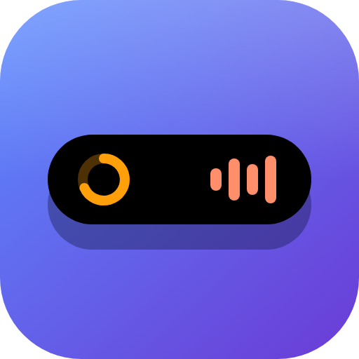
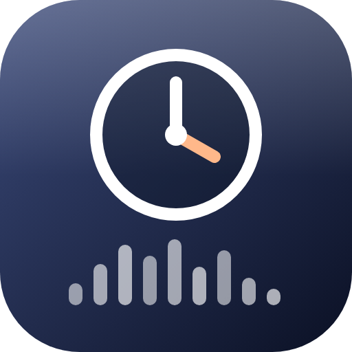
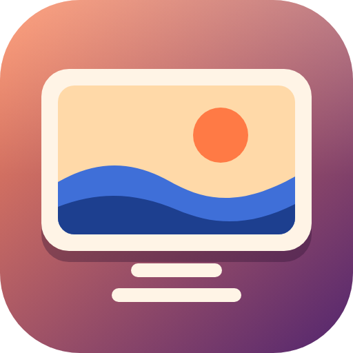
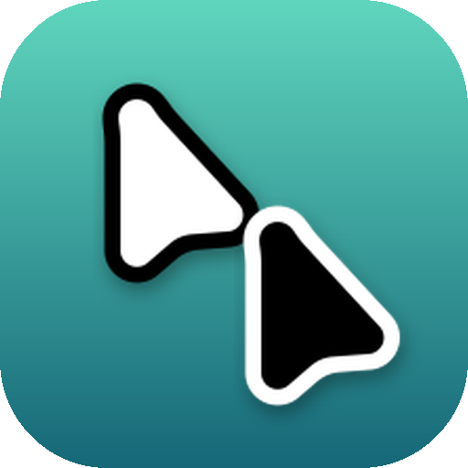

Make Windows glow.
An island at the top of the screen, a clock on the desktop, wallpapers that move and pointers that match. Four free apps, one installer.

Island
The Dynamic Island, now on Windows. A black pill at the top of the screen that grows into whatever is happening.
- Music with cover, controls and visualizer
- Live score of your competitive game
- Timer, pomodoro and screen recorder
- Steam downloads, weather and focus modes
- Hides itself in full screen and in matches

Mond Clock
A desktop clock in the Mond style: day, date, time and weather in the middle of your wallpaper, with the song that is playing under it.
- Sound bars that follow the music
- Hover the cover to pause or skip
- Weather for your city
- Stays visible on Win + D

Living Wallpaper
Animated wallpapers that stay light: one per monitor, decoded on the graphics card, and nothing running when nobody is looking.
- Ten wallpapers of its own, some moving with the sound
- Your videos, pictures and web pages
- Pauses when a game takes the screen
- Reads the video and web wallpapers you have in Wallpaper Engine

Island Cursors
Pointers that match the island, in black or white with an outline in the opposite color.
- Every pointer morphs into the next
- Busy and working animated at 60 fps
- Sharp at every Windows pointer size
- Your old pointers come back on uninstall
One installer, your way.
Pick the apps, choose how each one starts, and it is done in a few seconds. It installs for you only, with no administrator.
Download for Windows-
Pick what to install
The four apps come on; click a card to leave one out.
-
Make it yours
Open with Windows, the island floating or docked, 24 or 12 hour clock, the weather city, black or white pointers.
-
Install
If something is missing (.NET 10, Python, WebView2), the setup gets it through winget. Each app then updates itself from its own releases.
If Windows warns you
The setup is not signed, so SmartScreen may show "Windows protected your PC": click More info, then Run anyway. With Smart App Control turned on, Windows may refuse unsigned apps altogether.
Questions
Is it free?
Yes. The four apps and the installer are open source under the MIT license. If you want to help, the GitHub Sponsors button is at the bottom of the page.
Will it slow down my games?
The wallpaper pauses when a game takes the screen, the island hides in competitive matches and full screen video, and the clock stops its sound bars when something covers it.
Which Windows does it need?
Windows 11, 64-bit. Windows 10 may work, but it is not tested.
What language is it in?
English and Portuguese, following your Windows. You can switch the island and the clock in the setup.
How do I remove it?
Settings, Apps, Desktop Glow, Uninstall. You pick what to remove; your old pointers come back and each app keeps its settings in case you install again.
Can I install only one app?
Yes. Turn the others off on the first screen. Running the setup again later adds or updates the rest.